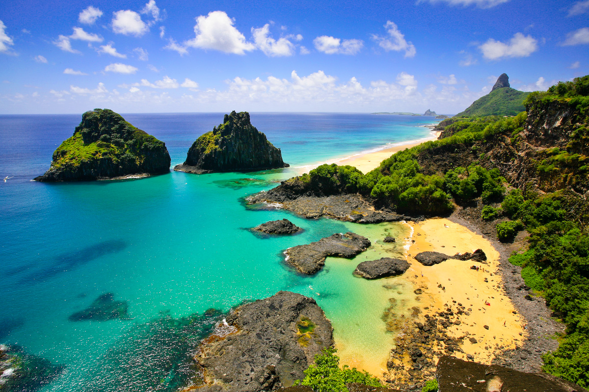
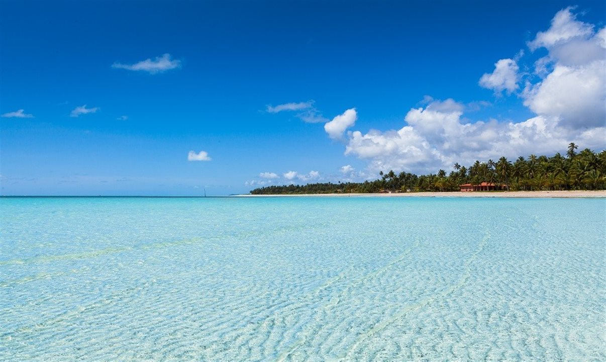
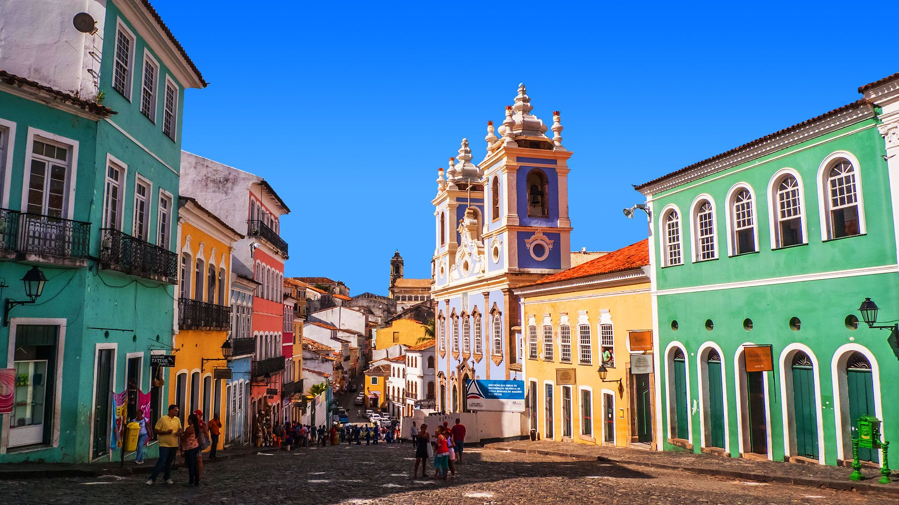
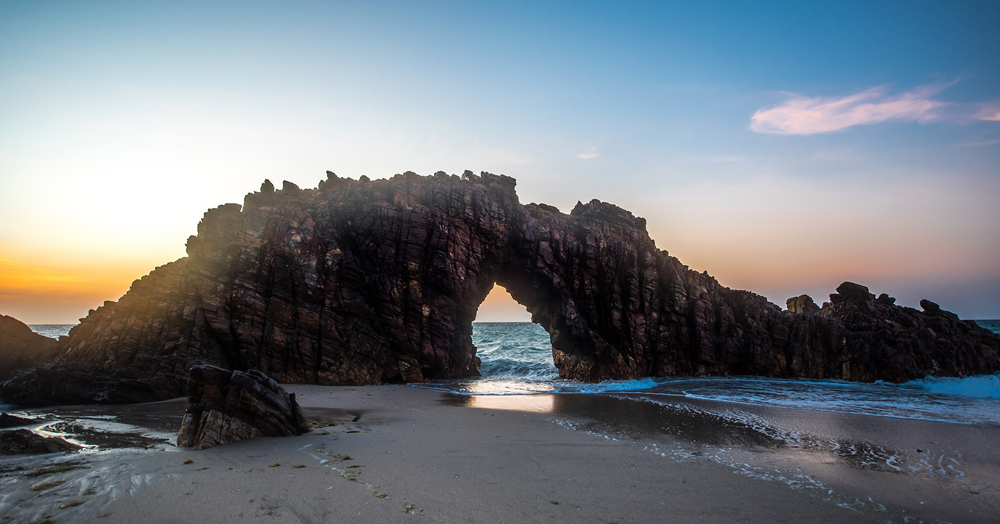
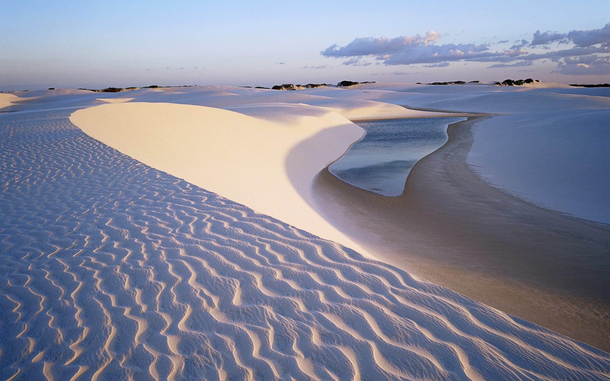
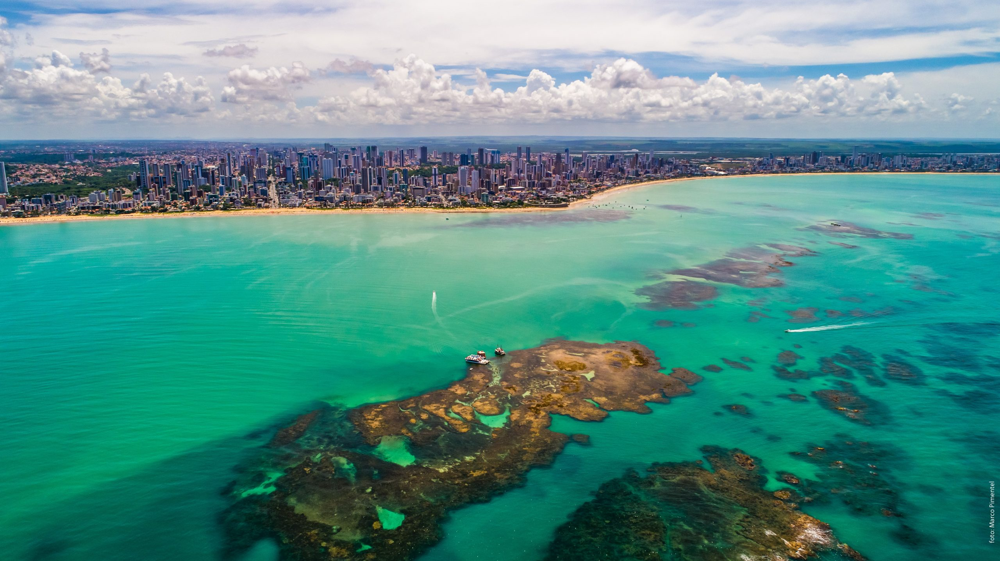
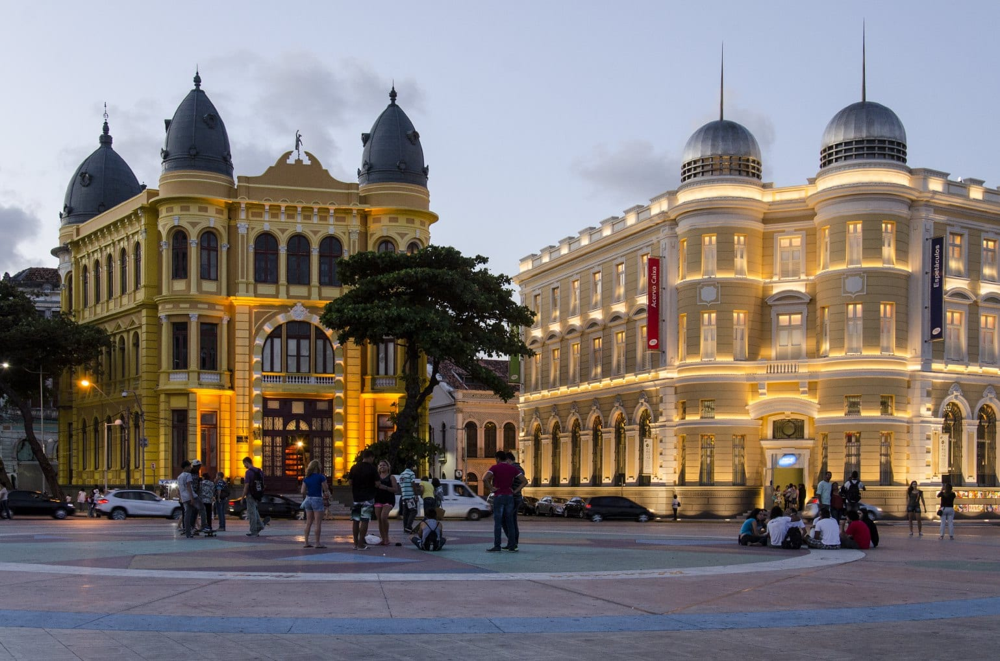
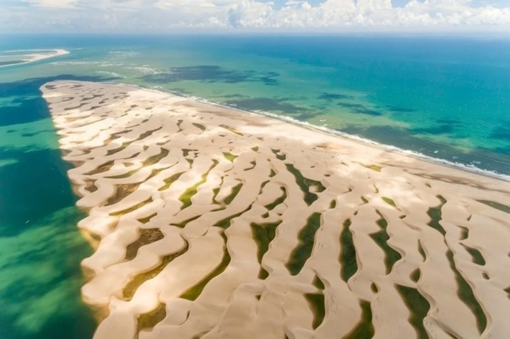
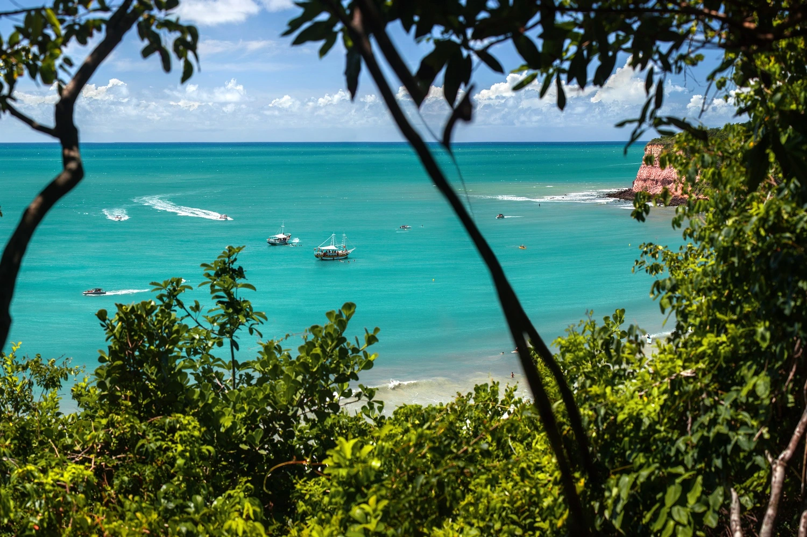
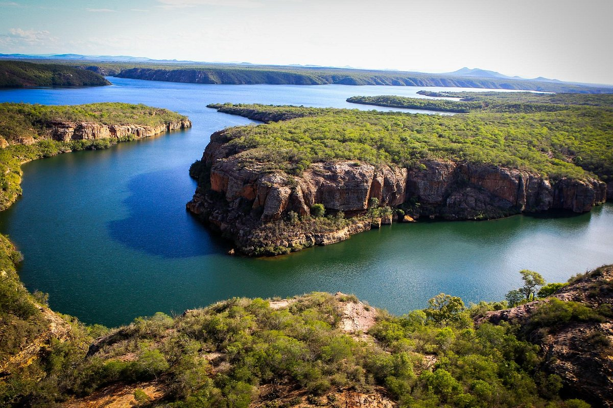

Região Nordeste

Alagoas - AL
Alagoas está entre os menores estados do nosso país em extensão territorial. Mesmo assim, ele reúne tantas belezas
naturais e culturais que acaba deixando qualquer gigante com inveja!
Pode até ser meio difícil escolher o que fazer em Alagoas durante uma viagem. Pensando nisso, listamos alguns
atrativos que você deveria pensar em incluir no seu roteiro.

Bahia - BA
Mas a Bahia não vive apenas de belas paisagens. Sua capital Salvador, por exemplo, tem um centro histórico
incrível, que retrata a época do período colonial brasileiro. No seu tour, coloque ainda na lista: a Praia do
Forte, Chapada Diamantina, Ilha de Boipeba, a região de Maraú, Mangue Seco e Caraíva.

Jericoacoara
Não dá para começar a falar dos pontos turísticos do Ceará sem falar da praia mais queridinha pelos brasileiros
nos últimos tempos: Jericoacoara!
Um vilarejo praiano, isolado da civilização por quilômetros de dunas de areia. Como se não bastasse, lagoas
cristalinas surgem no meio dessas dunas e são pontos perfeitos para dar um mergulho (e tirar muitas fotos).

Fortaleza
Fortaleza é a capital do estado do Ceará. Terra de Fagner, Didi Mocó, Belchior, Ednardo, Falcão, Patativa do
Assaré, Wesley Safadão… aí, não dá. É muita gente boa e famosa. Fortaleza também é uma das maiores cidades do
Nordeste brasileiro, e uma das mais baratas capitais do Brasil.
Maranhão - MA
Surreal! Esta é a palavra que define os encantos do Maranhão, quando nos deparamos com os olhos verdes ou azuis de
suas lagoas e lagos a fitar o céu azul do nordeste.
Sua cultura, animais silvestres, praias e dunas de areia, apresenta-nos uma região incrível e hospedeira,
disputada por milhares de turistas do mundo todo…
Sua cultura, animais silvestres, praias e dunas de areia, apresenta-nos uma região incrível e hospedeira,
E pensar que essa região fica aqui, bem pertinho de nós, em áreas de nosso Brasil bem brasileiro, o Maranhão!

Paraíba - PB
A história da Paraíba se confunde com a do Brasil, e não seria à toa, uma vez que o estado ainda guarda muitos
traços da colonização portuguesa, seja no Centro Histórico de João Pessoa, seja na arquitetura e nos costumes dos
municípios do interior.
Por outro lado, o estado tem grandes centros urbanos para quem gosta de aproveitar a vida noturna, a exemplo de
bares em João Pessoa e em Campina Grande. E, claro, é um espetáculo quando se fala em praias com areia batida e
mar quentinho, com destaque para Pitimbu, um dos municípios com maior faixa litorânea do Nordeste.

Pernambuco - PE
Pernambuco é um dos estados mais buscados por viajantes no Nordeste, já que abriga destinos paradisíacos e
famosos, que todo mundo sonha em conhecer. É uma viagem incrível tanto para quem gosta de cidade grande, quanto
para quem prefere o sossego da natureza. Lá, você encontra opções de roteiros para todos os gostos e estilos.

Piauí - PI
Os pontos turísticos do Piauí são tão abundantes e diversos que até mesmo quem é de lá ainda se surpreende. Esse é
um estado da região nordeste brasileira que esconde encantos inigualáveis, todavia ainda pouco explorados. Porém,
com essa lista, você certamente vai considerar conhecê-los! Uma das razões para o Piauí não figurar entre os
queridinhos do turismo nordestino é o fato de a sua faixa litorânea ser a menor da região. De qualquer forma, o
estado é imenso e conta não somente com praias, mas também com outros cartões postais de tirar o fôlego.

Rio Grande do Norte - RN
Afinal, o destino é um verdadeiro santuário natural com praias paradisíacas, falésias, sítios arqueológicos, rica
vegetação e atrações de todos os tipos.
Como se não bastasse tanta beleza, a simpatia e a cultura potiguar também chamam a atenção dos turistas, que se
apaixonam à primeira vista pelas belezas do Rio Grande do Norte.

Sergipe - SE
Um estado com praias de águas quentinhas e calmas, com o melhor caranguejo do Brasil, com um povo arretado e muito
simpático e com um pôr do sol de deixar qualquer um de queixo caído.
Um estado com o Cânion do Rio São Francisco, com a Orla mais bonita e democrática do Brasil, com muitas e muitas
histórias do cangaço, com ótimos locais e oportunidade para a prática de esportes náuticos, além de oferecer
tranquilidade.
